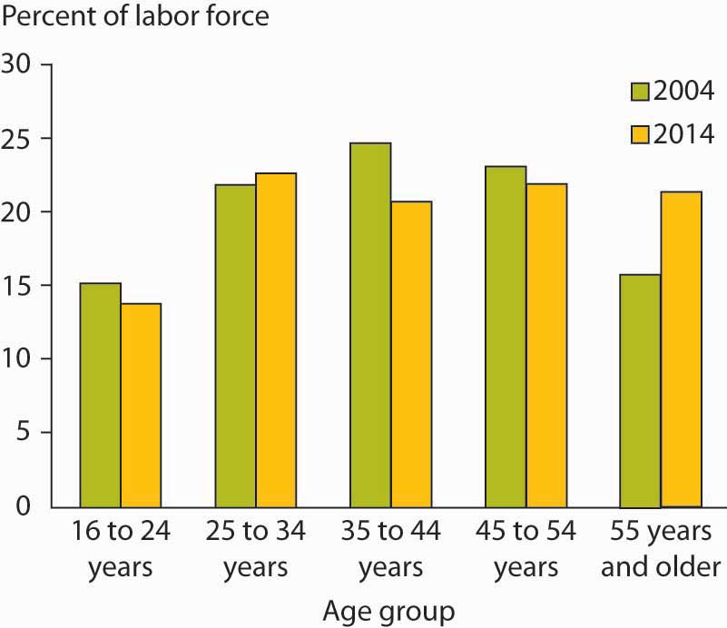
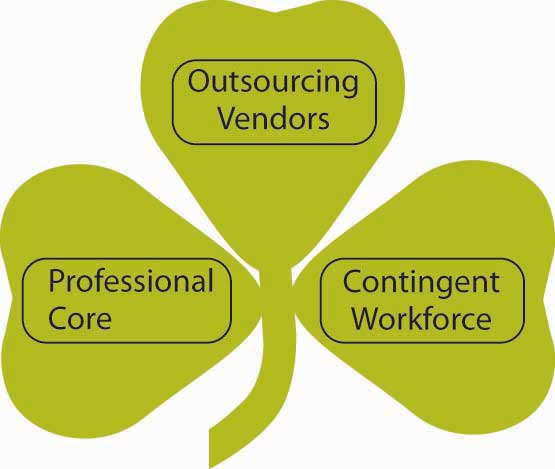

There are many trends within the workplace and around the globe that have and will continue to affect the workplace and your career. We are sure you have noticed many of these trends simply by reading newspaper headlines. We will highlight some of these trends along with the challenges and opportunities they present for students of organizational behavior.
Business ethics refers to applying ethical principles to situations that arise at work. It feels like it’s been one ethical scandal after the other. Enron Corp., AIG, Tyco International, WorldCom, and Halliburton Energy Services have all been examples of what can be described in terms ranging from poor judgment to outright illegal behavior. The immediate response by government has been the Sarbanes-Oxley Act, which went into effect in 2002. This act consists of 11 different requirements aimed at greater accountability, which companies must comply with in terms of financial reporting. And while there may be some benefit to businesses from complying with these rules,Wagner, S., & Dittmar, L. (2006, April). The unexpected benefits of Sarbanes-Oxley. Harvard Business Review, 84, 133–140. few see this as the long-term solution to dealing with unethical behavior. The challenge is to continue to think about business ethics on a day-to-day basis and institute cultures that support ethical decision making. The opportunity for organizations to be on the forefront of ethical thinking and actions is wide open. OB research finds that the most important determinant of whether a company acts ethically is not necessarily related to the policies and rules regarding ethical conduct but instead whether it has a culture of consistently ethical behavior and if leaders are committed to this ethical behavior.Driscoll, K., & McKee, M. (2007). Restorying a culture of ethical and spiritual values: A role for leader storytelling. Journal of Business Ethics, 73, 205–217.
Sources: Adapted from ideas in Callahan, D. (2004). The cheating culture: Why more Americans are doing wrong to get ahead. New York: Harcourt Books; Toffler, B. L. (2003). Five ways to jump-start your company’s ethics. Fast Company. Retrieved May 4, 2008, from http://www.fastcompany.com/magazine/75/5ways.html; Trevino, L. K., Weaver, G. R., & Reynolds, S. J. (2006). Behavioral ethics in organizations: A review. Journal of Management, 32, 951–990.
Studies suggest that fostering engagement, a concept related to passion, in employees has a significant impact on the corporate bottom line. Gallup, for instance, has been on the forefront of measuring the impact of what is called employee engagement. Employee engagementA person who is fully involved in and enthusiastic about their work is engaged. is a concept that is generally viewed as managing discretionary effort, that is, when employees have choices, they will act in a way that furthers their organization’s interests. An engaged employee is a person who is fully involved in and enthusiastic about their work.Employee engagement. Retrieved September 12, 2008, from Gallup Web site: http://www.gallup.com/consulting/52/Employee-Engagement.aspx. The consulting firm BlessingWhite offers this description of engagement and its value: “Engaged employees are not just committed. They are not just passionate or proud. They have a line-of-sight on their own future and on the organization’s mission and goals. They are ‘enthused’ and ‘in gear’ using their talents and discretionary effort to make a difference in their employer’s quest for sustainable business success.”BlessingWhite. (2008, April). 2008 Employee engagement report. Retrieved May 15, 2008, from the BlessingWhite Inc. Web site: http://www.blessingwhite.com/eee__report.asp.
Engaged employees are those who are performing at the top of their abilities and happy about it. According to statistics that Gallup has drawn from 300,000 companies in its database, 75%–80% of employees are either “disengaged” or “actively disengaged.”Gallup Press. (2006, October 12). Gallup study: Engaged employees inspire company innovation. Gallup Management Journal. Retrieved October 29, 2008, from http://gmj.gallup.com/content/24880/Gallup-Study-Engaged- Employees-Inspire-Company.aspx.
That’s an enormous waste of potential. Consider Gallup’s estimation of the impact if 100% of an organization’s employees were fully engaged:
Job satisfaction studies in the United States routinely show job satisfaction ratings of 50%–60%. But one recent study by Harris Interactive of nearly 8,000 American workers went a step further.Zinkewicz, P. (2005, April 11). Satisfaction (not) guaranteed. Retrieved October 29, 2008, from the Age Wave Web site: http://www.agewave.com/media_files/rough.html. What did the researchers find?
It is clear that engagement is both a challenge and an opportunity for OB.
Technology has transformed the way work gets done and has created many great opportunities. The nexus of increasing personal computing power, the Internet, as well as nanotechnology are allowing things to be created that weren’t even imaginable 50 years ago. And the rate of technological change is not expected to slow down anytime soon. Gordon Moore, a cofounder of Intel Corp., shocked the world in 1975 with what is now termed Moore’s Law, which states that computing power doubles every 2 years. This explains why a 4-year-old computer can barely keep up with the latest video game you have purchased. As computers get faster, new software is written to capitalize on the increased computing power. We are also more connected by technology than ever before. It is now possible to send and receive e-mails or text messages with your coworkers and customers regardless of where in the world you are. Over 100 million adults in the United States use e-mail regularly (at least once a day)Taylor, C. (2002, June 10). 12 Steps for email addicts. Time.com. Retrieved October 14, 2008, from http://www.time.com/time/magazine/article/0,9171,1002621,00.html. and Internet users around the world send an estimated 60 billion e-mails every day,CNET UK. (2006, April 26). 60 billion emails sent daily worldwide. Retrieved July 26, 2008, from the CNET UK Web site: http://www.cnet.co.uk/misc/print/0,39030763,49265163,00.htm. making e-mail the second most popular medium of communication worldwide, second only to voice. Technology has also brought a great deal of challenges to individuals and organizations alike. To combat the overuse of e-mail, companies such as Intel have instituted “no e-mail Fridays,” in which all communication is done via other communication channels. The technology trend contains challenges for organizational behavior.
Thomas Friedman’s book The World Is Flat: A Brief History of the Twenty-First Century makes the point that the Internet has “flattened” the world and created an environment in which there is a more level playing field in terms of access to information. This access to information has led to an increase in innovation, as knowledge can be shared instantly across time zones and cultures. It has also created intense competition, as the speed of business is growing faster and faster all the time. In his book Wikinomics, Don Tapscott notes that mass collaboration has changed the way work gets done, how products are created, and the ability of people to work together without ever meeting.
There are few barriers to information today, which has created huge opportunities around the globe. Marc Andreessen, cofounder of Netscape Communications Corporation, notes, “Today, the most profound thing to me is the fact that a 14-year-old in Romania or Bangalore or the Soviet Union or Vietnam has all the information, all the tools, all the software easily available to apply knowledge however they want.”Friedman, T. L. (2005, April 3). It’s a flat world, after all. New York Times. Retrieved June 1, 2008, from http://www.nytimes.com/2005/04/03/magazine/03DOMINANCE.html. Of course, information by itself is not as important as having the right information at the right time. A major challenge for individuals in the flattened world is learning how to evaluate the quality of the information they find. For tips on how to evaluate the quality of information, see the OB Toolbox below.
Here are a few Internet resources to refer to when evaluating information you find on the Web:
Figure 1.8
Social responsibility is not just something organizations do at the price of profits. It can also lead to superior results. Environmentally Neutral Design (END) has designed a shoe that reduces the amount of material needed so it costs less to produce and is the lightest performance shoe on the market.
Source: Used with permission of END.
The primary role of for-profit companies is to generate shareholder wealth. More recently, the concept of the triple bottom lineEvaluating organizations against three performance criteria including economic, social, and environmental viability. has been gaining popularity. Those subscribing to the triple bottom line believe that beyond economic viability, businesses need to perform well socially and environmentally. While some organizations have embraced the concepts underlying the triple bottom line, businesses are also undergoing a great deal of “greenwashing,” which refers to the marketing of products or processes as green to gain customers without truly engaging in sustainable business practices. Sustainable business practicesPractices that meet the current needs of businesses without compromising the needs of future generations. are those that meet the present needs without compromising the needs of future generations. The challenge is to reconcile the accountability that publicly owned firms have in generating wealth for their shareholders while attending to the triple bottom line. On the other hand, organizations also have an opportunity to leverage a proactive stance toward innovative processes that can result in even greater profits for their products. For example, sales of the Toyota Prius, which combines combustion engine efficiency with hybrid electric technology, have been dramatic and have helped propel Toyota to record market share and profits. An unlikely leader in the sustainability movement is Wal-Mart. Wal-Mart hired Adam Werbach, the former president of the Sierra Club, to help train 1.3 million North American Wal-Mart employees about sustainability. Wal-Mart has also been pressuring suppliers to produce compact fluorescent lightbulbs with less mercury and has slashed the resources needed in packaging by requiring all suppliers to make packages smaller.Fetterman, W. (2006). Wal-Mart grows “green” strategies. USA Today. Retrieved June 1, 2008, from http://www.usatoday.com/money/industries/retail/2006-09-24- wal-mart-cover-usat_x.htm; Sacks, D. (2007, December 19). Working with the enemy. Fast Company. Retrieved June 1, 2008, from http://www.fastcompany.com/magazine/118/working-with-the-enemy.html. In the future, increasing interdependence between businesses, governmental agencies, and NGOs is bound to effect change throughout the economy.Campbell, J. L. (2007). Why would corporations behave in socially responsible ways? An institutional theory of corporate social responsibility. Academy of Management Review, 32, 946–967; Etzion, D. (2007). Research on organizations and the natural environment, 1992–present: A review. Journal of Management, 33, 637–664.
You have probably heard that the American workforce is aging. Over the next 30 years, 76 million baby boomers will retire, but there will only be 46 million new workers from Generations X and Y entering the labor force. This demographic trend creates both challenges and opportunities for organizations.
The aging trend has been predicted for decades. “The number of U.S. workers over the age of 40 has increased significantly over the past 30 years. By 2010, more than 51% of the workforce will be 40 or older, up almost 20% over 30 years. At the same time, the portion of the workforce aged 25 to 39 will decline by nearly 3%. The number of workers aged 55 and older will grow from 13% of the labor force in 2000 to 20% in 2020.”Mosner, E., Spiezle, C., & Emerman, J. (2003). The convergence of the aging workforce and accessible technology: The implications for commerce, business, and policy (Microsoft white paper). Retrieved June 1, 2008, from the Microsoft Web site: http://www.microsoft.com/enable/aging/convergence.aspx. There will be record numbers of retirements. Aging workforces can create great opportunities for industries such as health care, but it can also mean great challenges lie ahead as entire industries related to basic infrastructure face massive retirement projections. For example, everything from air traffic controllers to truck drivers are predicted to be in huge demand as thousands of retiring workers leave these industries at roughly the same time.Ewart, H. (2008, April 29). Female truckies needed amid driver shortage. Retrieved June 1, 2008, from the ABC News Web site: http://www.abc.net.au/news/stories/2008/04/29/2229837.htm; Watson, B. (2008, January 30). Aviation. Retrieved June 1, 2008, from the MSNBC Web site: http://www.msnbc.msn.com/id/22917202/.
Figure 1.9 Percentage of Labor Force by Age Group for 2004 and Projections for 2014
Source: U.S. Department of Labor, Bureau of Labor Statistics Occupational Outlook Handbook 2006–2007 edition. Retrieved October 15, 2007, from http://www.bls.gov/oco/images/ocotjc03.gif.
The Millennial Generation (which includes those born between 1980 and 2000) differs from previous generations in terms of technology and multitasking as a way of life. Having never known anything different, this population has technology embedded in their lives. In addition, they value teamwork, feedback, and challenging work that allows them to develop new skills. If you are in this generation or know those who are, you know there is an expectation of immediate interaction.Oblinger, D. (2003). Boomers, Genexers and Millennials: Understanding the new students. Educause Review. Retrieved June 2, 2008, from http://net.educause.edu/ir/library/pdf/ERM0342.pdf. The challenge for organizational behavior is to keep individuals from different generations communicating effectively and managing people across generational lines despite different values placed on teamwork, organizational rewards, work–life balance, and desired levels of instruction.
Figure 1.10
A shamrock organization includes an equal number of regular employees, temporary employees, and consultants and contractors.
OutsourcingAn organization asking an outside organization to perform functions that could have been performed by itself. has become a way of life for many organizations—especially those based in the United States that are outsourcing to other countries where labor is relatively inexpensive. Outsourcing refers to having someone outside the formal ongoing organization doing work previously handled in-house. This practice can involve temporary employees, consultants, or even offshoring workers. OffshoringRefers to some or all of a business process being moved from one country to another country. means sending jobs previously done in one country to another country. Nowhere is there more outsourcing and offshoring than in the software technology industry. A survey of software developers revealed that 94% outsource project work, and when they offshore, the work most frequently goes to India, Singapore, Russia, and China.McGee, M. K. (2007, October 2). Canada wants to become the next India for U.S. software companies. Information Week. Retrieved May 22, 2008, from http://www.informationweek.com/news/management/showArticle.jhtml?articleID=202200301. Microsoft has been expanding their use of employees in Canada for a variety of reasons such as closer proximity to Microsoft’s headquarters in Seattle, Washington, as well as similarity of language and time zones. Across industries, more than 80% of boards of directors in the United States have considered offshore outsourcing.Diana, A. (2003, November 12). Outsourcing by the numbers. TechNewsWorld. Retrieved May 22, 2008, from http://www.technewsworld.com/story/32114.html?welcome=1211412779&welcome=1211478843. Charles Handy, author of The Age of Paradox, coined the term shamrock organization, which is an organization comprising one-third regular employees, one-third temporary employees, and one-third consultants and contractors. He predicts that this is where organizations are headed in the future. The darker side of the changing trend in organization composition revolves around potential unemployment issues as companies move toward a shamrock layout. Fortunately, this shift also presents an opportunity for organizations to staff more flexibly and for employees to consider the tradeoffs between consistent, full-time work within a single organization versus the changing nature of work as a temporary employee, contract worker, or consultant—especially while developing a career in a new industry, in which increased exposure to various organizations can help an individual get up to speed in a short amount of time. The challenge for organizational behavior is managing teams consisting of different nationalities separated not only by culture and language but also in time and space.
Trends include ethical challenges, rapid technological change, a flattening world, sustainable business practices, demographic trends, and the global marketplace. A number of trends will influence the way work gets done today and in the future. Understanding organizational behavior will help you anticipate and adapt to these changes as a lifelong learner.


{kind=link}